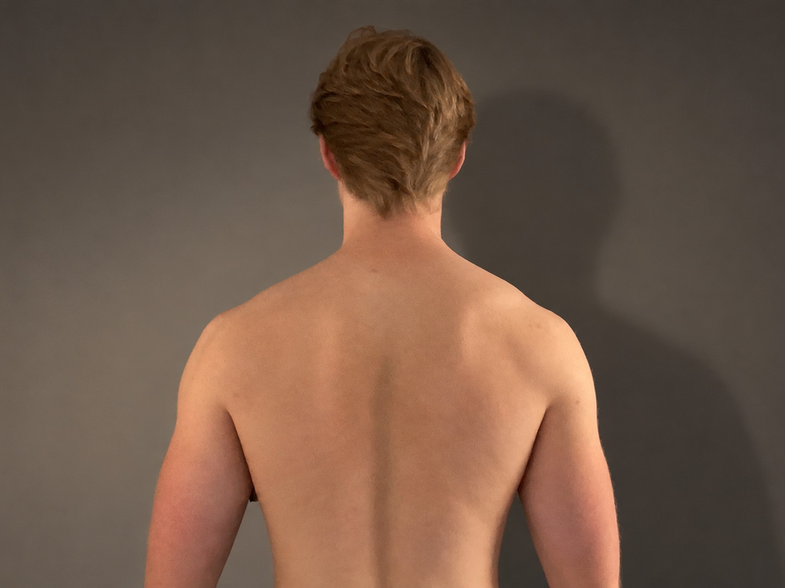
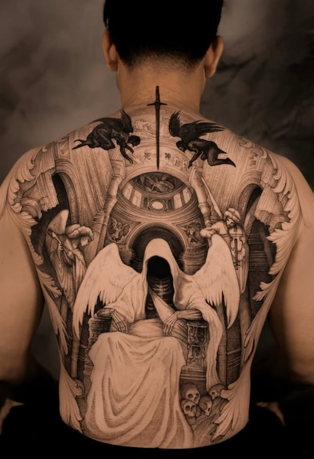
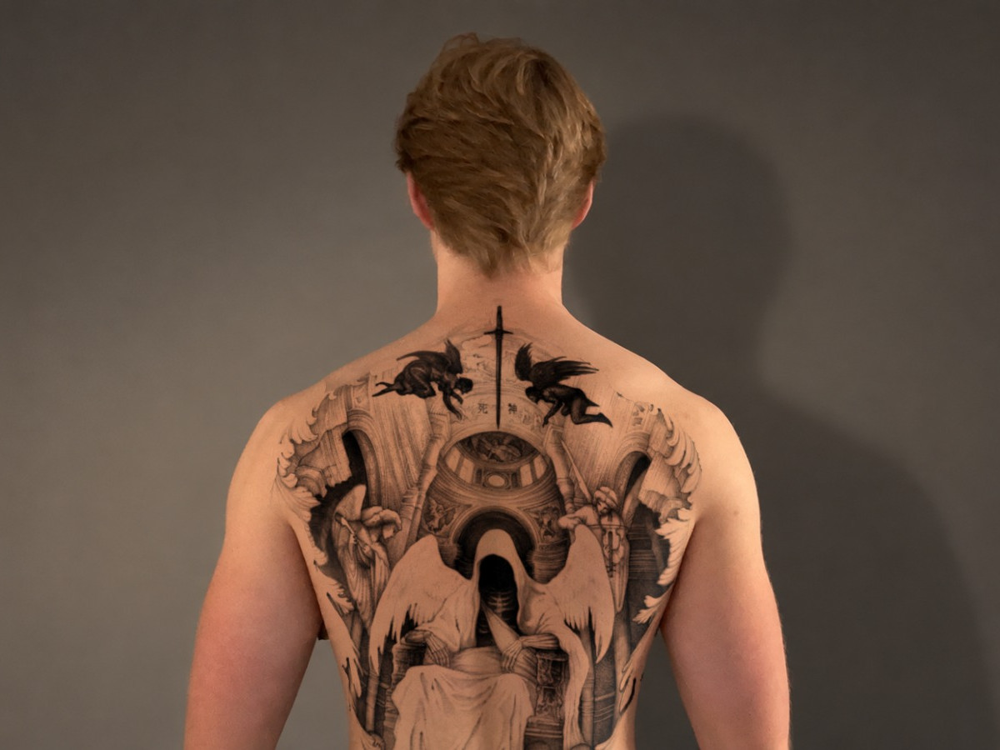

Se tatueringen på dig innan du bokar
Inget laddas upp, bilden stannar i din telefon.
Dra för att flytta. Dra i hörnet eller nyp med två fingrar för att ändra storlek och vrida.
Läser bilden



Inget laddas upp, bilden stannar i din telefon.
Dra för att flytta. Dra i hörnet eller nyp med två fingrar för att ändra storlek och vrida.